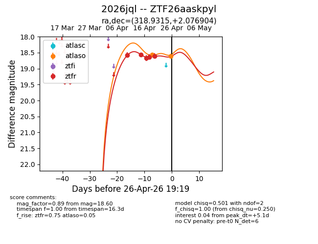
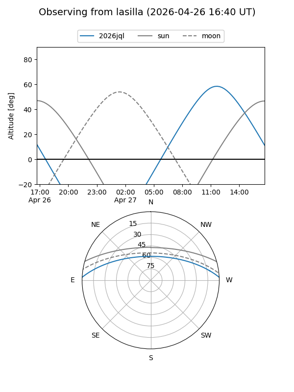
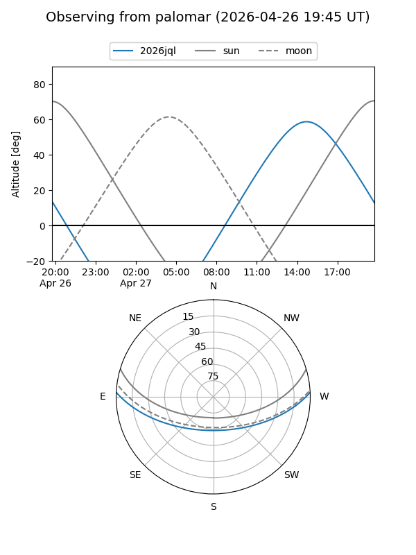
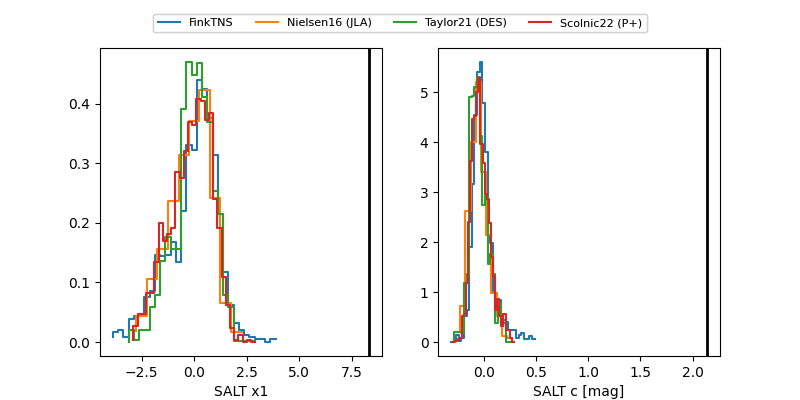

2026jql
Target 2026jql at 2026-04-26 19:20
Aliases and brokers:
FINK: link
Lasair: link
ALeRCE: link
TNS: link
YSE: link
alt names
ZTF26aaskpyl (ztf,fink_ztf)
2026jql (tns,yse)
Coordinates:
equatorial (ra, dec) = 318.9315,+2.07690
equatorial (HMS+DMS) = 21:15:43.55,+02:04:36.85
galactic (l, b) = (53.3421,-30.47461)
Flags:
Photometry:
last atlaso=18.60, ztfr=18.60
2 atlaso, 5 ztfr detections
Lightcurve

Visibility


Additional plots
